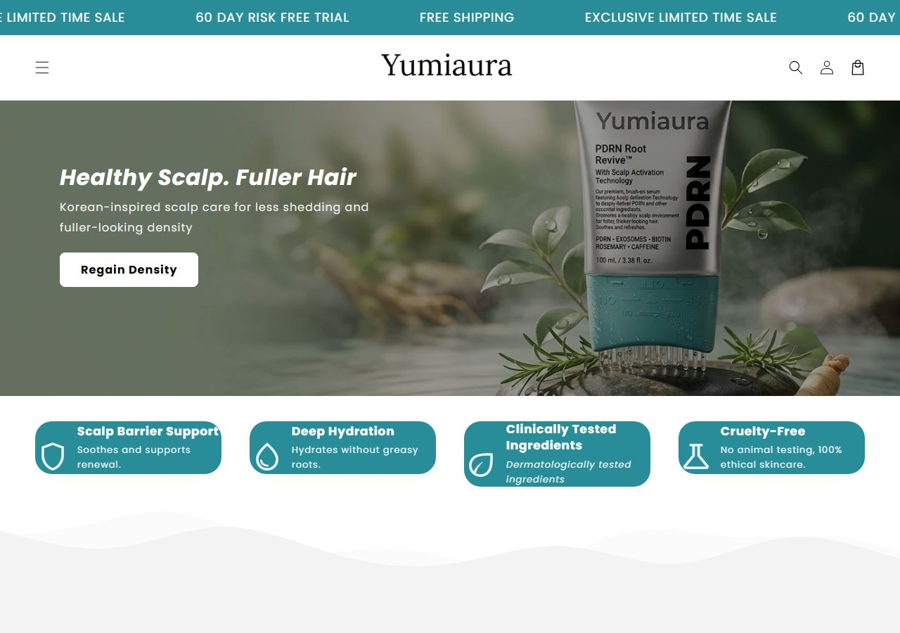

yumiaura.com OBSERVAR contexto_de_mercado
Vale observar: Ângulo de ingrediente exótico coreano: transferível para escova LED ('Korean LED technology') Não copie: 1 produto: risco de produto único; nossa loja tem escada de 3 produtos.O que o veredito cobre: Confirma que existe público UK para produto coreano de scalp care com GBP. Ângulo de headline: 'Salmon DNA for hair growth' / 'Korea's Secret To Fuller, Thicker Hair'.
01Produto campeão

PDRN Root Revive™
Único produto da loja. Preço com âncora (£36.99 de £46). 4 anúncios ativos em GBP no UK. observado
Escada de oferta observada (order bump, upsell e pacotes)
| Degrau | O que é | Preço | Evidência |
|---|
02Mídia paga
| Ritmo de criativo | Valor | Leitura |
|---|---|---|
| criativos únicos observados | sem rolagem não obtidosem leitura de rolagem | amostra, não o total de criativos da loja |
| duplicação (mesmo texto, vários anúncios) | sem leitura de textos repetidos não obtidoesta loja não entrou na leitura de texto da análise de anúncios | quanto o mesmo texto é reaproveitado com mídias diferentes |
| cadência por dia | sem série diária não obtidoa Biblioteca pública não entrega a data de cada anúncio da amostra inteira; a rolagem tem teto de 500 e ordena por recência | não extrapolar uma cadência: seria número inventado |
| longevidade máxima | não obtidonão lido | piso: o anúncio mais antigo pode estar fora da amostra |
| anúncios com 60 dias ou mais | sem leitura não obtidoloja fora da tabela de escala | anúncio que fica mais de 60 dias no ar costuma ser anúncio que se paga; isso não prova lucro |
| mix de formato | sem leitura não obtidosem mix lido |
Criativo campeão desta loja
Nenhum dos 10 criativos mais escalados do mercado é desta loja. A leitura de criativo abaixo vem dos ângulos observados.
03Tráfego real
04Faturamento mensal estimado
Benchmark de custo do setor: CPM, CPC e CPA por anunciante não existem como dado público. O ROAS não é mostrado: sairia da mesma conta e daria o mesmo número em qualquer loja.
05Páginas capturadas
No celular
06Anatomia do vencedor inferido
Ângulos ativos observados
| # | Ângulo e prova |
|---|---|
| 1 | Ingrediente exótico: 'Salmon DNA for hair growth?' |
| 2 | Resultado: 'Get Your Hair Back!' |
| 3 | Origem coreana: 'Korea's Secret To Fuller, Thicker Hair' |
07Catálogo, oferta e identificação
- Plataforma
- Shopify (products.json respondeu, 1 produto)
- Apps
- não obtidoapps não lidos
- Pixel Meta
- não obtidonenhuma fonte desta pesquisa traz o pixel da loja
- Catálogo
- 1 produtos lidos; preço mediano do catálogo GBP 36,99. 1 produto: PDRN Root Revive™. Loja muito simples/nova.
- Frete
- não lido nesta pesquisa
- Garantia
- não lida nesta pesquisa
- Prazo e BNPL
- não lido nesta pesquisa · nenhum parcelamento (BNPL) detectado nos meios de pagamento lidos
- Meios de pagamento
- Shopify Payments (GBP); inferred
- Reviews
- não obtidoavaliações não lidas
- Redes
- não obtidorede social não coletada neste levantamento
- Origem provável
- Reino Unido (preços em GBP, email: Yumiaura@hotmail.com)
- Domínio
- · Tranco: não lido
- Ângulo de ingrediente exótico coreano: transferível para escova LED ('Korean LED technology')
- Preço âncora simples: £36.99 de £46
- 1 produto: risco de produto único; nossa loja tem escada de 3 produtos
- Produto é soro, não escova LED
08Dados não obtidos
| Dado | Motivo | Método tentado |
|---|---|---|
| Tráfego e conversão | loja muito nova/pequena | SimilarWeb bloqueado |
| Pixel da Meta | nenhuma fonte desta pesquisa identifica o pixel da loja | leitura pública do HTML e dos apps; sem inspeção de navegador |
| Faturamento mensal | sem tráfego medido não há como triangular | nenhum proxy por porte foi calculado |
| CPM, CPC e CPA desta loja | a Meta não publica custo por anunciante | Biblioteca de Anúncios pública |
| Valor investido em anúncios e impressões | a Meta só publica gasto de anúncio político; alcance só na União Europeia | API oficial e Biblioteca pública |